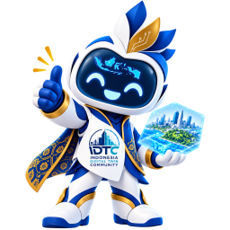

Misi selesai
0 / 18

DIGITAL TWIN · SMART CITY · LEARNING
Pemain
0 / 18
1 / 10
Level 5
3 hari
CITY ARENA // RANKED
Scan anomali dan pulihkan aliran data sebelum alarm kota naik.
QUICK LOADOUT
“Halo! 👋 Aku Twini! Twin City kita masih kosong… bantu aku membangunnya?”
“Mission pertama kita… MEMBANGUN DIGITAL TWIN!”
LIVE CITY FEED
TWINI LEARNING RIBBON
JALUR DASAR
Digital Twin menghubungkan model aset, data kondisi aktual, dan analisis agar keputusan kota bisa diuji sebelum diterapkan.
PETUALANGAN DIGITAL TWIN
Papan lokal demo. Skor dihitung dari materi selesai, misi petualangan, dan XP.
DARI OBJEK FISIK KE REPRESENTASI DIGITAL
Model BIM bukan hanya bentuk 3D. Setiap objek perlu geometri yang tepat, konteks ruang, properti material, dan identitas yang konsisten agar dapat dipakai sebagai dasar Digital Twin.
STRUKTUR MODEL
Representasikan bentuk, ukuran, orientasi, dan posisi objek secukupnya untuk koordinasi serta analisis.
Hubungkan objek ke site, gedung, lantai, ruang, zona, atau sistem agar konteks lokasinya jelas.
Catat material dan atribut relevan, misalnya kelas, kapasitas, rating, produsen, atau kebutuhan pemeliharaan.
Gunakan ID unik, nama, klasifikasi, dan referensi aset agar data sensor serta riwayat inspeksi menuju objek yang tepat.
CONTOH DATA
| Tingkat | Contoh | Informasi kunci |
|---|---|---|
| Gedung | Rumah Sakit Kota | Kode gedung dan alamat |
| Lantai / ruang | Lantai 2 · Ruang AHU | Kode ruang dan zona layanan |
| Sistem | HVAC | Nama sistem dan relasi peralatan |
| Aset | Pompa CHW-P-02 | ID unik, tipe, lokasi, spesifikasi, dan status |
Nama parameter dan format pertukaran data mengikuti standar serta kebutuhan pemilik aset. Pastikan satu ID aset dipakai konsisten di model, sistem pemeliharaan, dan integrasi sensor.
BIM + DIGITAL TWIN
BIM menyatukan geometri, spesifikasi, relasi, dan dokumen aset untuk perencanaan, konstruksi, serah terima, serta pengelolaan fasilitas.
Digital Twin menghubungkan model dengan sensor, sistem pemeliharaan, jadwal, cuaca, dan sumber data lain yang memiliki waktu serta asal yang jelas.
Data aktual dibandingkan dengan batas operasi, riwayat, dan pola normal untuk menemukan anomali, penurunan kinerja, atau kebutuhan inspeksi.
Tim dapat memperkirakan dampak perubahan setelan, jadwal perawatan, atau penggantian komponen sebelum keputusan diterapkan pada aset nyata.
ALUR KERJA
| Langkah | Yang dilakukan | Hasil |
|---|---|---|
| 1. Rencanakan | Tentukan tujuan, pengguna, aset kritis, dan keputusan yang ingin didukung. | Kebutuhan informasi yang terukur |
| 2. Modelkan | Susun objek BIM, struktur lokasi, ID unik, properti, dan relasi antar sistem. | Model aset yang dapat ditelusuri |
| 3. Integrasikan | Petakan ID aset ke sensor, inspeksi, work order, dan sumber data lain. | Data masuk ke objek yang tepat |
| 4. Validasi | Periksa kelengkapan, satuan, waktu, kualitas, dan kesesuaian data dengan kondisi lapangan. | Informasi yang dapat dipercaya |
| 5. Tindak lanjuti | Gunakan insight untuk prioritas kerja, ukur hasilnya, lalu perbarui model dan aturan. | Perbaikan berulang berbasis bukti |
Intinya: BIM adalah fondasi informasi dan konteks aset, sedangkan Digital Twin menambahkan hubungan dengan kondisi nyata, waktu, analisis, dan umpan balik keputusan. Model 3D tanpa data yang terawat belum menjadi Digital Twin.
KONDISI NYATA, TERHUBUNG KE ASET
Data sensor membuat Digital Twin mencerminkan kondisi aset saat ini. Setiap pembacaan harus melewati rantai pengiriman yang jelas: sensor mengukur, gateway meneruskan, platform memvalidasi, lalu model aset menampilkan kondisi terbaru untuk dianalisis.
ALUR DATA
Sensor mengukur suhu, getaran, tekanan, energi, atau aliran secara berkala.
Gunakan ID aset yang konsisten agar data masuk ke pompa, ruang, atau sistem yang benar.
Waktu pengukuran, satuan, dan lokasi membantu membandingkan data secara akurat.
Bandingkan pembacaan dengan kondisi normal untuk mengenali perubahan yang perlu diperiksa.
RANTAI PENGIRIMAN
Sensor mengubah kondisi fisik seperti suhu, tekanan, arus, kelembapan, posisi, atau getaran menjadi nilai terukur pada interval tertentu.
Gateway dapat menyaring, memberi cap waktu, menyimpan sementara, dan mengirimkan data melalui protokol jaringan yang sesuai saat koneksi tersedia.
Platform memeriksa format, satuan, rentang nilai, duplikasi, kualitas koneksi, dan keamanan sebelum data diterima sebagai telemetri yang sah.
Nilai yang valid dipetakan ke ID aset di BIM, disimpan bersama riwayat waktunya, lalu digunakan untuk dashboard, alarm, analitik, dan keputusan perawatan.
KONTRAK DATA
| Elemen | Contoh | Mengapa penting |
|---|---|---|
| ID aset | CHW-P-02 | Menentukan objek BIM dan peralatan yang mengirimkan data. |
| Jenis pengukuran | pressure | Menjelaskan arti nilai, bukan hanya angka tanpa konteks. |
| Nilai dan satuan | 3.2 bar | Memungkinkan perbandingan yang benar dengan batas operasi. |
| Waktu dan zona | 2026-09-30 10:15 UTC | Menempatkan kondisi pada urutan kejadian yang tepat. |
| Kualitas dan sumber | good · sensor-17 | Membantu membedakan data tepercaya, terlambat, hilang, atau perlu diperiksa. |
Perhatikan: nilai sensor tidak otomatis menjadi informasi yang berguna. Digital Twin membutuhkan identitas aset, waktu, satuan, kualitas, dan riwayat agar angka dapat dibaca sebagai kondisi, dibandingkan dengan ambang batas, lalu ditindaklanjuti.
PAHAMI RISIKO SEBELUM BERTINDAK
Gabungkan model aset dan data aktual untuk memahami dampak suatu kondisi. Analisis membantu menentukan prioritas, sementara simulasi memberi ruang untuk menguji tindakan sebelum diterapkan.
ALUR ANALISIS
Bandingkan data terbaru dengan nilai normal dan riwayat aset.
Perhatikan tingkat keparahan, kemungkinan dampak, dan layanan yang bergantung pada aset.
Gunakan model untuk menilai pilihan perbaikan dan dampaknya sebelum diterapkan.
Pilih tindakan yang sesuai, lalu pantau data untuk memastikan kondisi membaik.
KAMPUNG KOTA · MEDAN
Bantu warga menghubungkan aset, sensor, dan data agar desa tumbuh makin tangguh.
JELAJAHI LINGKUNGAN
PENGALAMAN 3D · UNITY WEBGL
Masuk ke ruang Digital Twin interaktif dari build Unity.
KELAS BARU · 5 MENIT
Pahami cara model, data sensor, dan analisis bekerja bersama untuk membantu kota mengambil keputusan.
PERMINTAAN WARGA · BU RANI
Selesaikan misi berikutnya untuk membantu desa.
LOKASI TERPILIH
Pusat kabar dan koordinasi warga. Mulai petualangan Digital Twin dari sini.
KONDISI DESA
LANGKAH PETUALANGAN
KOTA NYATA, CERMIN DIGITAL
Digital Twin adalah representasi digital dari aset atau kota yang terus diperbarui dengan data kondisi nyata. Dengan begitu, kita dapat memahami keadaan, melihat risiko, dan menguji pilihan sebelum bertindak.
Model BIM memberi bentuk, lokasi, dan identitas untuk setiap bangunan serta peralatan.
Sensor mengirim data seperti suhu, tekanan, atau getaran pada aset yang tepat.
Analisis membantu menemukan perubahan, memahami dampaknya, lalu menentukan langkah terbaik.
Jawab kuis dengan benar untuk membuka checklist.
PROFESOR TWINI BERTANYA
Data pompa ini dari tiga hari lalu. Bantu Twini menyelidiki sebelum dia menyuruh ikan-ikan ikut rapat.
LIVE DIGITAL TWIN
Build Unity belum ditemukan. Letakkan hasil WebGL di unity/Build/; instruksi bridge tersedia di panduan Unity.
SIMULASI DIGITAL TWIN
Hubungkan sinyal sensor, kenali kondisi aset, lalu pilih tindakan yang tepat. Setiap ronde menunjukkan cara Digital Twin bekerja.
PREFERENSI TAMPILAN
CMS ADMIN
Kelola akun admin dan role akses CMS.
REWARD WALLET
HADIAH PENCAPAIAN
Hadiah contoh untuk progres Belajar Digital Twin. Penukaran tersimpan sebagai simulasi lokal dan belum menerbitkan voucher atau mengirim barang.
KEMITRAAN & DUKUNGAN
IDTC membuka peluang kolaborasi untuk membangun ekosistem pembelajaran Digital Twin, Smart City, BIM, IoT, dan geospasial.
Daftar berikut adalah calon mitra dan pihak yang ingin dilibatkan. Nama yang tercantum tidak menyatakan sponsor atau kerja sama resmi telah disepakati.
SEKTOR PUBLIK
Dukungan kebijakan, tantangan kota, data publik yang layak dibagikan, dan penerapan solusi Digital Twin.
BUMN & BUMD
Kolaborasi studi kasus aset, infrastruktur, energi, transportasi, air, dan fasilitas publik.
TEKNOLOGI & INDUSTRI
Peluang dukungan perangkat lunak, lisensi edukasi, pelatihan, perangkat, dan keahlian teknis.
RISET & TALENTA
Kampus dapat berkolaborasi pada kurikulum, riset, proyek mahasiswa, validasi materi, dan mentor.
BENTUK DUKUNGAN
Rincian proposal, kontak resmi, serta mekanisme sponsorship perlu ditetapkan oleh pengelola IDTC sebelum publikasi dan aktivasi program.
IDENTITAS PEMAIN
PREVIEW PROFIL
BIM / Arsitektur
Rekomendasi: Engineer TwiniAVATAR KARAKTER
WORLD MAP
TWINI CITY INTEL
MISSION SYSTEM
BIM DISTRICT
BIM INCIDENT ROOM · SECTOR 04
DIGITAL SCANNER
SENSOR DETECTIVE
REFERENSI INSTRUMENTASI
Contoh merek yang umum dijumpai di proyek industri dan infrastruktur; bukan endorsement. Pilih sensor berdasarkan rentang ukur, akurasi, lingkungan, protokol, dan kebutuhan kalibrasi.
EMERGENCY MODE
MASTERPLAN KOTA · SEKTOR 01
DESAIN KAWASAN
LEVEL 01 · PETA PEMBANGUNAN
Hunian lokal · taman · waterfront
HASIL SIMULASI KOTA
LANGKAH PENINGKATAN NILAI KOTA
Skor adalah estimasi perencanaan dari layout simulasi, bukan pengganti kajian teknis lapangan.
AI MISSION
INVENTORY
TWINI SKIN
ACHIEVEMENT
LEADERBOARD
GUILD SYSTEM
PLAYER PROFILE
ORNAMEN PENCAPAIAN
Twin Engineer
AVATAR PROFIL
Pilih karakter yang mewakili peranmu di ekosistem Digital Twin.
TOKO PROFIL
Beli satu kali dengan koin, lalu pasang atau ganti kapan saja.
DIGITAL TWIN MATURITY
CITY BUILDER